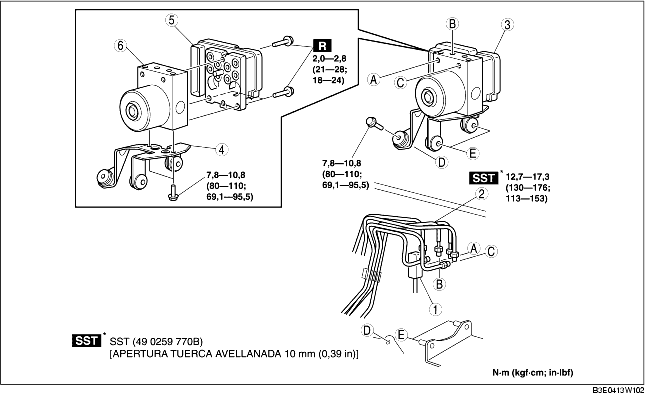

1. Quitar la batería y la correspondiente bandeja. [Véase REMOCION/INSTALACION BATERIA (ZJ, Z6)]. [Véase REMOCION/INSTALACION BATERIA (LF)].
2. Para vehículos con volante a la izquierda, quitar el tubo flexible del depósito (vehículos MTX). (Véase Detalles de remoción tubo flexible del depósito). (Véase Detalles de remoción tubo y tubo fexible del depósito del embrague). (Véase Detalles de instalación tubo flexible del depósito). (Véase Detalles de instalación tubo y tubo fexible del depósito del embrague).
3. Quitar según el orden indicado en la tabla.
4. Instalar en el orden contrario al de la remoción.

.
|
1
|
Conector
(Véase Detalles de remoción conector).
(Véase Detalles de instalación conector).
|
|
2
|
Tubo de freno
(Véase Detalles de remoción tubo de freno).
|
|
3
|
Soporte del conjunto ABS HU/CM
|
|
4
|
Soporte
|
|
5
|
ABS CM
|
|
6
|
ABS HU
|
1. Tirar de la tapa del conector hacia arriba en la dirección de la flecha mientras se empuja la lengüeta de la tapa.
2. Tirar el conector hacia la parte delantera del vehículo y quitarlo.
1. Colocar una referencia para la alineación sul tubo del freno y el ABS HU/CM.
2. Aplicar una cinta de protección al conector para evitar que el fluido de frenos entre.
3. Quitar el tubo del freno.
1. Como se muestra en la figura, desplazar el soporte en la dirección indicada por la flecha y quitar el conjunto ABS HU/CM y el soporte de la carrocería.
1. Alinear las referencias e instalar el tubo de freno en el ABS HU/CM como indicado en la figura.
1. Tras haber conectado el conector, comprobar que la tapa del conector esté completamente insertada.